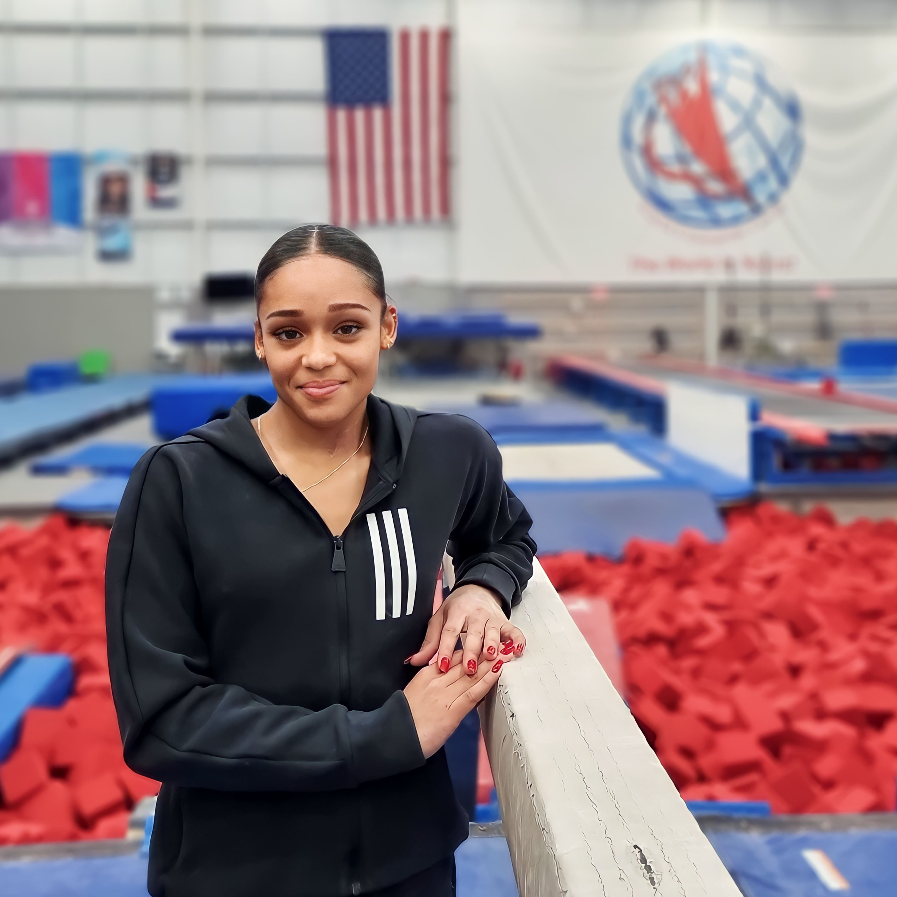
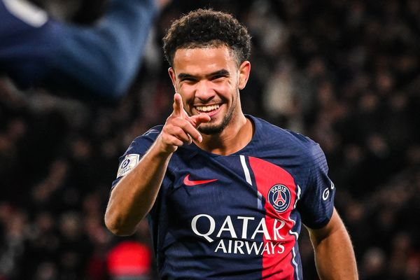

JO 2024 - FOOTBALL
LA MARTINIQUAISE WENDIE RENARD A ÉTÉ APPELÉ DANS LA LISTE DÉFINITIVE DES JO 2024.

JO 2024 - GYMNASTIQUE
LA GYMNASTE MARTINIQUAISE MÉLANIE DE JESUS DOS SANTOS FAIT PARTIE DE LA SÉLECTION FRANÇAISE POUR LES JO DE PARIS 2024.

EURO 2024 - FOOTBALL
LE PRODIGE MARTINIQUAIS WARREN ZAÏRE-EMERY PARTI ACTUELLEMENT AVEC L'ÉQUIPE DE FRANCE LE CHAMPIONNAT D’EUROPE EN ALLEMAGNE.